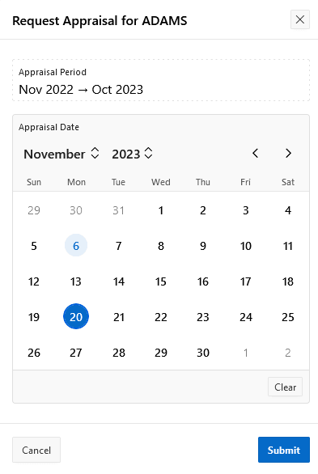
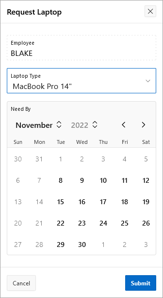
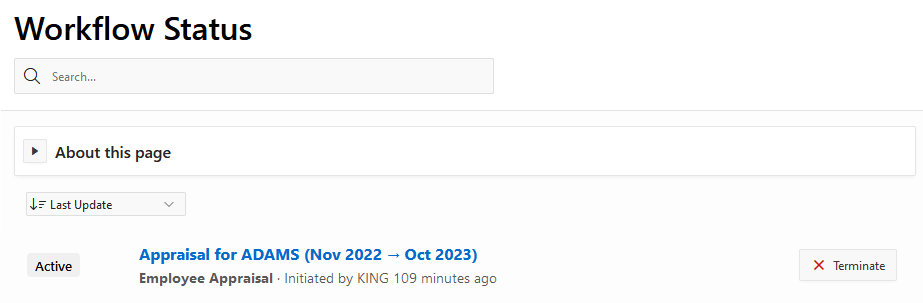

20.1.7 Example: Workflows
View the workflows functionality in the Sample Workflows, Approvals, and Tasks app.
The Sample Workflows, Approvals, and Tasks Application
Tip:
To view this example, install the sample app, Sample Workflows, Approvals, and Tasks. To learn more, see Installing Apps from the Gallery.
Once you install Sample Workflows, Approvals, and Tasks, you can reference the More Information page of the sample app for an overview of workflow features, approval and action tasks features, and a discussion of how to use the sample app.

The Employees screen shows all employees. Users can request the following changes for an employee:
- Salary - Requests a change to the employee's salary. This functionality uses an approval task to review and approve the change and a customized task details page.
- Job - Requests a change to the employee's job. This functionality uses an approval task to review and approve the change and a standard task details page.
- Bank - Requests a change to the employee's bank account. This functionality uses an approval task that the initiating employee can approve.
- Appraisal - Begins the process of an employee's appraisal. This functionality uses a workflow with action tasks for the employee, the employee's manager, and, if applicable, a VP.
- Laptop - Requests the purchase of a new laptop for the employee. This functionality uses a workflow with an approval task and an action task. The workflow is programmatically completed when the laptop is delivered.
Employee Appraisal Workflow
The Request Appraisal for ADAMS screen allows users to request an appraisal for an employee and set a completion date for the appraisal. 
Description of the illustration actions_request_appraisal.png
Once a user requests an employee appraisal, the Appraisal button on the Employees screen is no longer visible.
The workflow for the employee appraisals includes a combination of activities including human tasks, Invoke APIs, and a switch.
Laptop Request Workflow
The Request Laptop screen allows users to request a specific laptop by a specific date for an employee. 
Description of the illustration approvals_request_laptop.png
Once a user requests a laptop, the Laptop button on the Employees screen is no longer visible until a member of the Operations team marks the laptop as delivered.
The workflow for laptops includes a combination of activities including human tasks, Invoke APIs, switches, emails, and a wait activity.
Workflow Administration
The Workflow Status page, based on the My Workflows context, gives workflow participants a way to easily view workflow status. If the participant is also a workflow administrator, they can administer the workflows from this page as well. 
Description of the illustration workflow_status_console.png
Clicking on the title of each workflow instance gives the workflow participant (in the OPERATIONS department) access to perform further actions with the workflow, including checking workflow activities, variables, parameters, and history.
Parent topic: About Workflows